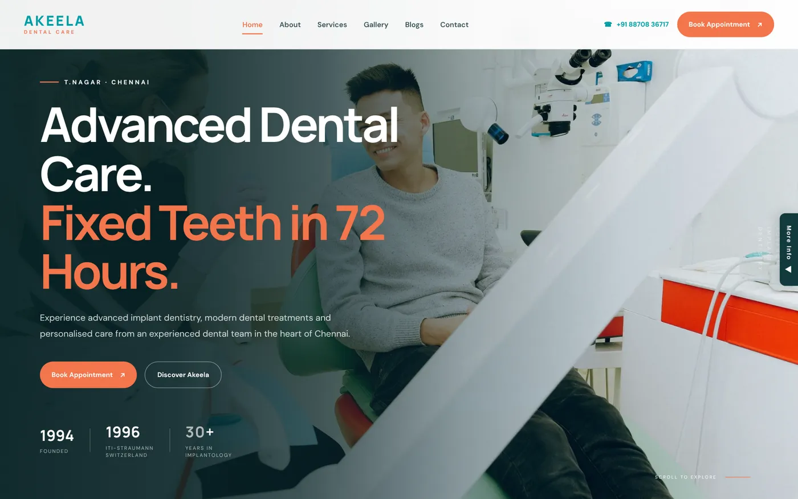
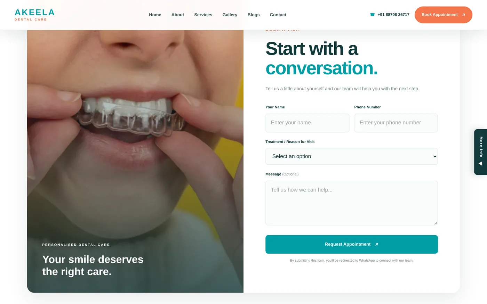

Digital marketing expert in Tamil Nadu
I'm Sakthi, founder of Astra Nexora. I plan and run digital marketing for businesses in Tamil Nadu and across India: search, websites, ads, social media and the automation that ties it together.
01One person who sees the whole picture
Many businesses hire one person for the website, another for ads and someone else for social media, and nobody connects the dots. I work across all of it, so your website, your Google presence, your ads and your WhatsApp follow-up all work towards the same goal: more enquiries.
02Who I work with
Dental clinics, a dental laboratory, a premium gift box brand, startups and small businesses. Each project on this site shows the problem, what I built and what changed.
03How we start
Send me your website or Instagram on WhatsApp. I'll look at where you're losing customers today and reply with the first three things I'd fix. No obligation.
04Search: SEO and Google Business Profile
Showing up when people search for your service is usually the cheapest source of steady enquiries. I handle technical and on-page SEO, local SEO and Google Business Profile optimisation, and track it all in Search Console and GA4.
05Websites that turn visitors into enquiries
Your website should make it obvious what you offer and how to contact you, especially on mobile. For Akeela Dental Care I reorganised the treatments, improved readability and made booking, calls and WhatsApp easy to reach from every page. I build on WordPress, Wix, Framer and custom code, depending on what fits.
06Ads: Google and Meta
When you need enquiries faster, I set up Google Ads and Meta Ads campaigns with proper conversion tracking, so you can see which campaigns bring calls and messages, not just clicks.
07Social media and creatives
Consistent, on-brand content builds trust. I plan content and design posters, product creatives and reels; for Guggulr, a premium gift box brand, I created a series of product creatives that kept every post on-brand.
08Automation that follows up for you
Leads go cold when nobody replies. I connect forms, WhatsApp and email with n8n so enquiries reach your team instantly and confirmations go out on their own.
Step by step
- 01
Understand
Your business, your customers, where enquiries come from today and where they're lost.
- 02
Plan
The channels worth focusing on first, with clear goals for each one.
- 03
Execute
Website, SEO, ads, content and automation, done by me, not handed off.
- 04
Measure & improve
GA4 and Search Console reporting, then adjust based on what brings enquiries.
- Google Analytics 4
- Google Search Console
- Google Ads
- Meta Ads
- WordPress
- Wix
- Framer
- Canva
- CapCut
- n8n
Projects that show how

Akeela Dental Care – Website & UX
A clearer, more responsive website that helps patients find treatments and book quickly.
- WordPress
- Elementor
- Canva

Akeela Dental Care – WhatsApp Booking Automation
Appointment requests that arrive in WhatsApp with the patient's details, ready for the clinic to confirm.
- WhatsApp Business
- n8n
- Booking form
GUGGULR – Instagram Brand Growth
A consistent Instagram creative system that gave a premium gift box brand a stronger identity.
- Canva
- Photoshop
- CapCut
Common questions
What does a digital marketing expert do?
Plans and runs the channels that bring a business customers online: search, website, ads, social media and follow-up. The job is to turn those into calls, enquiries and sales, and to measure it.
Do you work with small businesses?
Yes. Most of my clients are small and growing businesses, and I keep the work practical: what brings in enquiries first.
Do you work outside Tamil Nadu?
Yes, with businesses across India. Everything runs remotely over WhatsApp, email and calls.
Which digital marketing channel should I start with?
For most local businesses: a clear website, a complete Google Business Profile and basic SEO first, because they keep working without ad spend. Ads come next when you need faster results.
Can you handle everything, or only one part?
Both. Some clients hire me for one thing, like SEO or a website; others want the website, search, social and automation handled together.